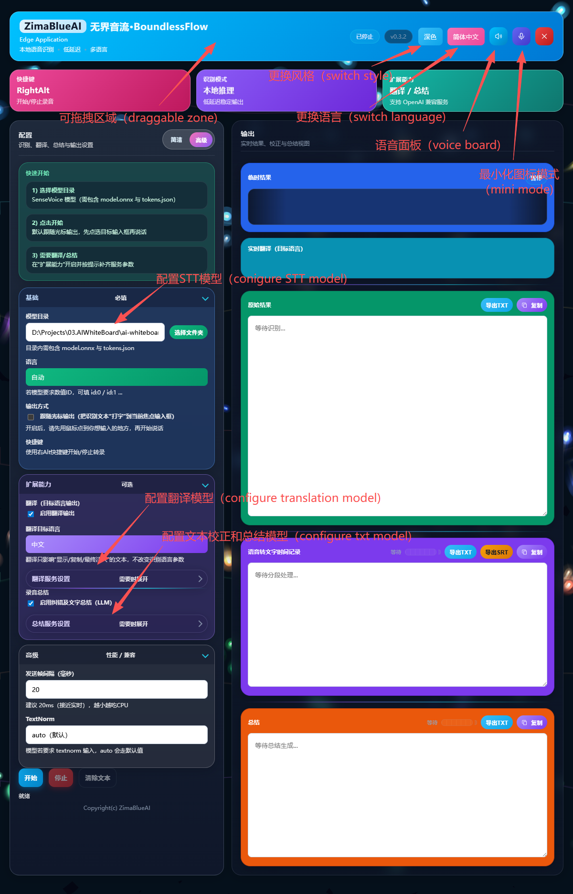

Welcome to Boundless Flow
Boundless Flow is a desktop smart voice assistant designed to elevate your creation and note-taking efficiency. Whether you are recording meeting minutes, capturing sudden inspirations, or dubbing videos, Boundless Flow provides a seamless Speech-to-Text (STT) and Text-to-Speech (TTS) experience.

Core Features Overview
🎙️ Real-time STT
Powered by advanced local models, it converts your speech into text accurately and rapidly.
🌐 Real-time Translation
Built-in translation proxy supports calling Large Language Models for high-quality cross-lingual translation.
📝 AI Proofreading & Summary
Automatically polishes and corrects recognized text, and generates meeting or recording summaries at scheduled intervals.
🗣️ TTS & Voice Cloning
Offers natural and fluent voice synthesis with multiple voice options and voice cloning capabilities, bringing your text to life.
How to Use This Manual
Please use the navigation bar on the left to browse the feature modules you are interested in. Each module contains detailed configuration instructions and usage guides to help you get started quickly and maximize the potential of Boundless Flow.
Tip: By default, you can use the RightAlt key on your keyboard to start or stop recording anytime, anywhere.
Appendix (Beginner-friendly)
New to “model downloads / local LLMs / cloud APIs”? Follow the beginner guide step by step.
Copyright(c) ZimaBlueAI
齐码蓝智能（大理市 ）有限责任公司